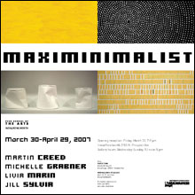

|

Maximinimalist

Maximinimalist Poster PDF |
|

March 30-April 29, 2007
In Maximiminalist, curator Nicholas Frank has identified four artists working today who have transformed Minimalist ideas into practices that concurrently embrace and expose the inherent fallacies of predictability, sameness and repetition. "The concentrated handwork of some contemporary artists, call them maximinimalists, is curious for its resistance to digitization. For these handworkers, physical digits are in play, five fingers on each hand getting down and dirty with the paintbrush and markers, the X-acto knife and plaster-stirrer. Minimalists made one thing, then sought out logical variations on that one thing. Maximinimalists do one thing, then do it again and again. And again, and again. First came an aesthetics of mind, now aesthetics are a ghost of a suggestion, a given. Machine-mind meets readily available materials, repetition and sameness become individuation and enunciation of passing time..." (From the curator's essay.)
Curator's Essay PDF by Nicholas Frank
Inova/Kenilworth
2155 N. Prospect Ave.
Milwaukee, WI 53202
Gallery hours: Wednesday-Sunday, 12 noon-5 pm |
|